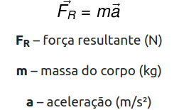
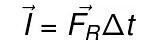
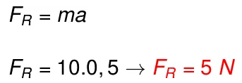
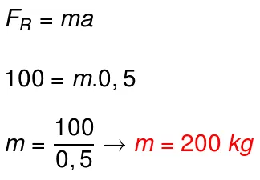

FÍSICA
A Segunda Lei de Newton
A segunda lei de Newton, também conhecida como princípio fundamental da dinâmica, afirma que a força resultante que atua sobre um corpo é igual ao produto de sua massa pela aceleração. De acordo com ela, quando se sujeita um corpo à ação de uma força resultante não nula, esse corpo adquirirá uma aceleração na mesma direção e no mesmo sentido da força resultante.
O que é a segunda lei de Newton?
De acordo com a segunda lei de Newton, a aceleração obtida por um corpo é diretamente proporcional à força resultante aplicada sobre o corpo e também inversamente proporcional à massa (inércia) desse corpo. Nesse sentido, entende-se que, para que um corpo possa sofrer mudanças de velocidade, é necessário que as forças que atuam sobre ele não se anulem.
No esquema a seguir, mostramos como é possível calcular a aceleração do corpo, com base nas grandezas força e massa, além disso, pode-se observar que a aceleração é dada pela razão entre a variação de velocidade (ΔV) e um intervalo de tempo (Δt):

O conceito de força resultante é de grande importância para a compreensão da segunda lei de Newton. A força resultante diz respeito à soma vetorial de todas as forças que atuam sobre o mesmo corpo. Para fazermos somas vetoriais, é necessário que se leve em conta tanto o módulo quanto a direção e o sentido das forças, assim: forças paralelas somam-se, forças opostas subtraem-se e forças perpendiculares somam-se, segundo o teorema de Pitágoras.
Fórmula da segunda lei de Newton
A fórmula da segunda lei de Newton é relativamente simples, ela indica que a força resultante é igual ao produto da massa do corpo pela aceleração, confira:

A figura a seguir exemplifica situações em que, aplicando-se a mesma força, obtém-se diferentes acelerações, em razão da grande diferença das massas dos corpos, observe:
Além dessa forma, a segunda lei de Newton pode ser definida por outras equações. Originalmente, a ela foi escrita em termos de uma grandeza física chamada quantidade de movimento ou momento linear. De acordo com esse enunciado, a força resultante sobre um corpo é igual à variação de sua quantidade de movimento durante um determinado intervalo de tempo, confira:

Na equação anterior, Q representa a quantidade de movimento, de um corpo ou sistema, que pode ser calculada por meio desta equação:
Existe ainda outra forma alternativa de definir-se a segunda lei de Newton. De acordo com essa descrição, a força resultante sobre um corpo também pode ser definida com base no impulso aplicado no corpo. O impulso, por sua vez, é uma grandeza física vetorial, assim como variação da quantidade de movimento (ΔQ), confira:

Em complementação à fórmula exposta, existe o teorema do impulso. Esse teorema afirma que o impulso é igual à aplicação de uma força resultante durante um intervalo de tempo e produz uma variação na quantidade de movimento de um corpo ou sistema de corpos, confira:
Exemplos da segunda lei de Newton
Confira alguns exemplos de situações cotidianas que ajudam a ilustrar a segunda lei de Newton:
Primeiro se imagine empurrando um carrinho de compras vazio. Agora, caso esse carrinho estivesse cheio de mercadorias e você aplicasse sobre ele a mesma força usada enquanto estava vazio, teríamos o mesmo movimento? Não, uma vez que, com o carrinho cheio, sua inércia será maior, por isso será necessário que se aplique uma força maior, a fim de obter-se a mesma aceleração.
Em um cabo de guerra, dois grupos de crianças disputam, no entanto, ambos aplicam a mesma força no cabo. Nesse caso, a aceleração do sistema será nula, uma vez que as forças que atuam sobre ele anulam-se.
Ao chutar-se uma bola, percebe-se que a força aplicada pelo chute define qual será a velocidade em que a bola será lançada: quanto maior é a força, maior será a aceleração adquirida pela bola, o mesmo aplica-se a bolas de diferentes massas, uma vez que: quanto mais leve é a bola, mais aceleração ela adquire.
Confira exemplos de exercícios resolvidos relacionados à segunda lei de Newton:
Exemplo 1) Um corpo de massa igual a 10 kg move-se com aceleração constante de 0,5 m/s². Determine a intensidade da força resultante sobre esse corpo.
Resolução: Basta multiplicarmos a massa do corpo pela aceleração, confira:

Exemplo 2) Quando sujeito a uma força resultante de 100 N, um corpo passa a mover-se com aceleração constante de 0,5 m/s². Qual é a massa desse corpo?
Resolução: Vamos resolver esse exercício por meio da fórmula da segunda lei de Newton (FR = ma), observe:

Ao aplicarmos os valores fornecidos pelo enunciado na fórmula da segunda lei de Newton, descobrimos que a massa do corpo deve ser de 200 kg para que ele desenvolva uma aceleração de 0,5 m/s².